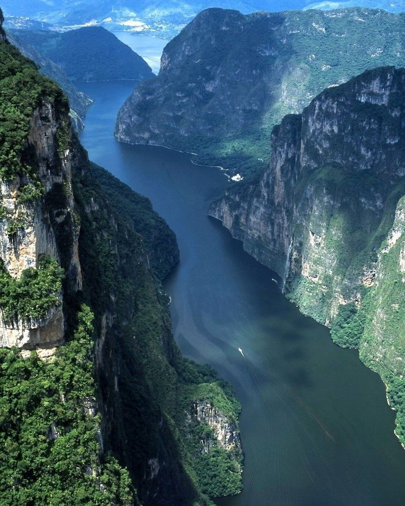

LOS RIOS DE CHIAPAS.
Los rios de chiapas son conocidos por su anchura y su profundidad son muy conocidos por sus cascadas naturales,al igual son muy importantes para la humanidad ya que una parte de ella dependemos lo seres humanos.
Los rios mas conocidos de Chiapas son dos el rio Río Grijalva y el Usumacinta;
RIO GRIJALVA
El Río Grijalva, también conocido como o Río Mezcalapa o Río Grande de Chiapas, es un río del sureste de México. Es el principal productor de energía hidroeléctrica y el segundo más caudaloso de ese país.
Este cuerpo de agua nace de la unión de los ríos Selegua, Grandagalpa (Rincón Tigre) y San Gregorio, que confluyen en el embalse de la Presa La Angostura; a partir de allí se le denomina Río Grijalva o Río Grande de Chiapas.
Sus principales fuentes nacen en la sierra de los Cuchumatanes,1 en el municipio de Chiantla, la primera en Huehuetenango, Guatemala, a unos 70 kilómetros de la frontera de Ciudad Cuauhtémoc, en Chiapas. En Guatemala se llama Río Seleguá, es el río que al ingresar a territorio mexicano se convierte en el río Rincón Tigre, en Chiapas después de confluir con el río San Gregorio, confluye con el río San Miguel (río Cuilco), continua discurriendo hacia el norte en donde forma el embalse de la presa de La Angostura, uno de los lagos artificiales más extensos de México, después de confluir con el río Rincón Tigre. El río cambia su curso de noroeste a norte hasta que llega a Tuxtla Gutiérrez en donde atraviesa la famosa falla geológica conocida como Cañón del Sumidero, en donde alcanza su máxima profundidad registrada antes de llegar al embalse de la Presa Chicoasén.
El río después de pasar por la Presa Chicoasén discurre de nuevo hacia el noroeste hasta entrar en el embalse de la Presa Netzahualcoyotl (Malpaso), es aquí en donde recibe uno de sus principales afluentes, el Río La Venta, para luego de nuevo girar hacia el norte y luego de pasar por la localidad de Rómulo Calzada entra en el embalse de la Presa Peñitas en donde recibe a otro gran afluente el Río Ostuacan. Posteriormente, sirve de límite estatal entre los estados de Chiapas y Tabasco, para finalmente adentrarse en el estado de Tabasco después de pasar por la comunidad de San Manuel.

RIO USUMACINTA
El río Usumacinta cuyo nombre se traduce como "lugar de monitos", es un río que se forma en las partes altas de la Sierra Madre, específicamente en el Departamento de Totonicapán, en Guatemala, y desemboca en el golfo de México. Su longitud es de 1123 km y es el río más caudaloso de México y Centroamérica, también es el río más largo de Centroamérica pero, el río Coco se considera el río más largo de Centroamérica porque su curso discurre completamente en territorio del istmo centroamericano; el Usumacinta es más largo, pero recorre Guatemala y México, y este último país no forma parte de Centroamérica,1 con una descarga de aproximadamente 5250 m³/seg.
Su recorrido inicia en Totonicapán en donde corre de sur a norte, marcando el límite departamental del Quiché con Totonicapán y Huehuetenango, para luego girar al este y adentrarse en el Quiché. Luego llega al embalse de la hidroeléctrica Chixoy donde divide las Verapaces con el Quiché y luego vuelve a dirigirse al norte en donde una vez más cambia su curso al este y luego de nuevo al norte en donde sirve de frontera entre Guatemala y México a lo largo de aproximadamente 310 km, y después se adentra en territorio mexicano por el estado de Tabasco, allí se divide en tres brazos y luego forma en conjunción con la cuenca del río Grijalva, un extenso delta pantanoso denominado pantanos de Centla, en el que alcanza un caudal de 5200 m³/s. Este delta mide alrededor de 50 km de ancho por 70 km de largo, que corresponde al 12,27 % de la superficie total del estado Tabasco.

Lista de rios de Chiapas.
- Lacantun
- Jatate
- Tulija
- Tzaconeja
- Santo Domingo
- Ningunilo
- Pichucalco
- Lacanja
- Suchiate
- Yayahuta
- Grande
- La Venta-Santa Catarina
- Despoblado
- Almandro
- Cahoacan
- Novillero
- Salinas chixoy
- Santa cruz
- Chacamax
- Sabanilla
- El platanar
- Custepeques
- Tzim-Bac
- El Tablon-Suchiapa
- Negro
- Euseba
- Lagartera
- Pando
- Camoapa
- La Sierra
- Cacaluta
- Chancala
- Perlas
- San Vicente
- Pasilha
- Coatan
- Los Amates-Santo Domingo
- Cuilco
- Blanco
- San Pedro
- Dolores
- Michol